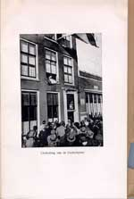
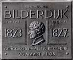

‘Ô bloem der steden’. Bilderdijk en Leiden
Samenstelling: Rick Honings en André Bouwman
De volgende onderwerpen komen aan bod:
12. Bilderdijk-activiteiten in Leiden
Tijdens de
jaarvergadering van de Maatschappij der Nederlandse Letterkunde op 5
juli 1831 werd Bilderdijk als dichter en taalgeleerde gehuldigd.
Vanwege zijn zwakke gezondheid kon hij zelf niet bij de ceremonie
aanwezig zijn. H.W. Tydeman nam de onderscheiding voor hem in
ontvangst. Zo vond Bilderdijk aan het einde van zijn leven toch nog
erkenning. Tijdens de jaarvergadering één jaar later werd de
inmiddels overleden dichter opnieuw herdacht. Sindsdien vonden er
eens in de zoveel tijd herdenkingen plaats, in Leiden, en in andere
steden. Er werden tentoonstellingen georganiseerd en gedenkstenen
onthuld; er werd zelfs een Bilderdijk-Museum in het leven geroepen.
Bilderdijk bleef de gemoederen intussen bezighouden. Zo keerde de
Leidse hoogleraar Gomperts zich in een essay tegen de terugkerende
Bilderdijkherdenkingen. Hij vond de dichter ‘een valse profeet’.
Door hem te huldigen, vierde men het obscurantisme, meende hij.
|
12.1. P. van Zonneveld [e.a.], Willem Bilderdijk,
1831-1981. Leiden 1981. [1213 F 45] –– Catalogus bij de tentoonstelling in het Academisch Historisch Museum, naar aanleiding van Bilderdijks honderdvijftigste sterfjaar. Ook vierde de Maatschappij de tweehonderdste verjaardag van zijn lidmaatschap. Het boekje bevat onder meer bijdragen van Peter van Zonneveld en Boudewijn Büch. |
|
 |
|
12.2. Foto van gedenksteenonthulling aan het Rapenburg. [AMNL suppl.]. –– Op 1 juli 1983 werd op Rapenburg 37 een gedenksteen onthuld om het huis aan te geven waar Bilderdijk tussen 1819 en 1823 woonde. De onthulling werd door Rienk Visser, de toenmalige voorzitter van de Maatschappij, voltrokken. |
|
 |
|
|
12.3. Foto’s van gedenksteenonthulling aan de Oude Singel. [1289 A 21]. –– Op 26 maart 1938 werd er aan de Oude Singel 86 een gedenksteen onthuld. Hier woonde Bilderdijk van 1823 tot 1827. De foto’s zijn afkomstig uit het boekwerkje Bilderdijkherdenking te Leiden door het Genootschap Willem Bilderdijk op zaterdag 26 maart 1938. [Den Haag 1938]. |
|
|  |  |
|
12.4. Foto met door Boudewijn Büch nagespeeld Bilderdijktafereel. [Privé-collectie]. –– Op de plaats waar Bilderdijk enige tijd heeft gewoond, Garenmarkt 6, thans parkeerplaats, beeldde Boudewijn Büch in 1973 uit hoe Bilderdijk aan een kleine schare toegewijde leerlingen college gaf. |
|
 |
|
| vorige pagina | volgende pagina |